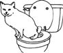

\1\2ğaç\3
İlk ehlileştirilen hayvan hangisidir?

a. Koyun
b. Domuz
c. Ren geyiği
d. At
e. Köpek
14.000 yıl kadar önce paleolitik avcı-toplayıcılar, şu anda Rusya/Moğolistan sınırının bulunduğu yerlerde, kendi göçebe gruplarından çok uzaktaki ren geyiklerini ayartmayı ve kendilerine küçük bir sürü yaratmak için bu geyikleri çiftleştirmeyi öğrendiler.
Ren geyikleri, tıpkı köşebaşlarındaki dükkanlar gibi, et, süt ve kürk sağlarlardı. Bu insanlar aynı zamanda ren geyiklerini ehlileştirmede yardımcı olmaları için köpek de eğitmiş olabilirler.
Günümüzde üç milyon civarında ehli ren geyiği vardır ve bunların çoğu İsveç, Norveç, Finlandiya ve Rusya topraklarına yayılmış Laponya’da toplanmıştır.
Geyikleri besleyen Laponlar kendilerine Sami adını verirler. Sami kelimesinin eski İsveççede “serseri” anlamına geldiğini bilmiyor olabilirler.
Ren geyiğine Kuzey Amerika’da “Caribou” adı verilir. Bu kelime doğu Kanada dili Mi’Maq’te (Micmac) “kazan kişi” anlamına gelen xalibu’dan gelir. Ren geyikleri/cariboular, altındaki likenlere ulaşana kadar karı kazmak için geniş ayaklarını kullanırlar. Ren geyikleri besinlerinin üçte ikisini likenlerden sağlar.
Ren geyikleri göçmendir ve yılda 4800 km yol katederler (bu mesafe memeliler için bir rekordur). Aynı zamanda hızlıdırlar da; karada saatte 77 km, suda 9,6 km hıza ulaşabilirler. Göç eden bir geyik sürüsü, ayaklarındaki tıkırdayan bir tendondan dolayı kastanyet gösterisi gibi ses çıkarır.
İşte bazı önemli hayvanların yaklaşık ehlileştirilme tarihleri:
Ren geyiği yaklaşık mö 12.000
Köpek (Avrasya, Kuzey Amerika) yaklaşık mö 12.000
Koyun (Güneybatı Asya) mö 8000
Domuz (Güneybatı Asya, Çin) mö 8000
Sığır (Güneybatı Asya, Hindistan, K. Afrika) mö 6000
Ehlileştirme evcilleştirmeden farklıdır; seçici çiftleştirmeyi kasteder. Filler ehlileştirilebilir fakat evcilleştirilemez.